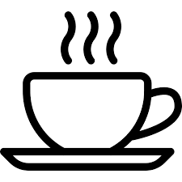
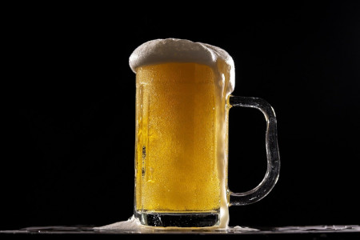
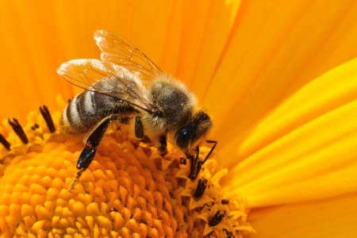

<!DOCTYPE html>
<html>
    <head>
        <title>My experiment</title>
         <script src="jspsych.js"></script>
	 <script src="plugins/jspsych-html-keyboard-response.js"></script>
         <script src="plugins/jspsych-html-button-response.js"></script>
         <script src="plugins/jspsych-audio-keyboard-response.js"></script>
         <script src="plugins/jspsych-survey-html-form.js"></script>
         <link href="css2/jspsych.css" rel="stylesheet" type="text/css">
    </head>
    <body></body>
    <script>

var timeline = [];

var n_screens = 11;
	    
  var welcome = {
	type: 'html-button-response',
    stimulus: '<h2>Willkommen zum Experiment!</h2>' + 
    '<div class="myDiv"><p>Vielen Dank für Ihre Interesse, an dieser Studie teilzunehmen. '+
    'Wir bitten Sie dafür, <strong>Kopfhörer</strong> zu verwenden.</p>' +
    'Dieses Experiment besteht aus zwei Teilen:' +
    ' <ol> <li>Eine <strong>Diskriminationsaufgabe,</strong> in denen Sie zwei Wörter hören werden. Sie müssen feststellen, ob sie gleich oder unterschiedlich sind;</li>' +
  '<li>Eine <strong>Identifizierungsaufgabe,</strong> in denen Sie nur ein Wort hören werden; dabei werden Sie zwei Bilder sehen. Sie müssen das Bild auswählen, das das gehörte Wort darstellt.</li> </ol>' +  

    '<p>Wir bitten Sie um Ihre Zustimmung, bevor wir Ihre Daten sammeln und verwenden. Bitte klicken Sie auf den "Start"-Button, um Ihre Zustimmung zu geben. Nachdem können Sie den Experiment starten. </p></div>',
    choices: ['Start'],
	  on_finish: function(){
        jsPsych.setProgressBar(0); // set progress bar to 85% full.
    }
};

timeline.push(welcome);

var zustimmung = {
    type: 'survey-html-form',
    preamble: '<h2>Einverständniserklärung zur Teilnahme an der Forschungsstudie</h2>' +
'<div class="myDiv"><p>Sie werden gebeten, an einer Forschungsstudie teilzunehmen. Bevor Sie der Teilnahme zustimmen, muss der/die Leiter/in des Experiments Sie über (a) den Zweck, Ablauf und die Dauer der Studie, (b) etwaige Risiken, Unannehmlichkeiten und Vorteile der Studie, (c) die Datenschutzbestimmungen informieren. Diese Infos können Sie <a href="info_sheet_inprogress.pdf" target="_blank">hier</a> herunterladen (Link wird in einem neuen Fenster geöffnet)</p></div>' +
'<h3>Teilnehmer/in</h3>' +
'<div class="myDiv"><p>Hiermit bestätige ich, dass ich über die Ziele, Methoden und Auswirkungen der aktuellen Studie, sowie über die Art der Teilnahme und mögliche Risiken informiert wurde. Ich habe das Informationsblatt gelesen und verstanden. Ich bestätige, dass meine Teilnahme an der Studie freiwillig erfolgt und nehme das Recht, meine Zustimmung jederzeit zurückzuziehen, zur Kenntnis. Verweigerung oder Abbruch werden mir keine Nachteile bringen.</p></div>',
    html: '<input name="zustimmung" type="checkbox" id="zustimmung"> <label for="zustimmung"> Hiermit stimme ich der Teilnahme an der Studie zu.</label> <p>Name des/der Teilnehmers/in: <input name="participant" type="text"/></p>',
button_label: 'OK',
	on_finish: function(){
        jsPsych.setProgressBar(1/n_screens);
    }
    
};

timeline.push(zustimmung);

var instructions1 = {
      type: 'html-button-response',
      stimulus: '<h2>Teil 1: Diskriminationsaufgabe</h2>' +  
	'<div class="myDiv"><p>In diesem Teil des Experimentes werden Sie zwei Wörter hören, die um 1.5 Sekunden getrennt sind.</p>' +
          '<p>Sie müssen feststellen, ob diese Wörter gleich oder unterschiedlich sind. Der Unterschied, wenn es einen gibt, besteht nur aus einem Vokal. Achtung: Sie haben nur 5 Sekunden, um eine Option auszuwählen! Deshalb müssen Sie nicht zu viel überlegen. </p></div>',
    choices: ['OK'],
	on_finish: function(){
        jsPsych.setProgressBar((2/n_screens));
    }
};

    timeline.push(instructions1);

var discr_proc = {
	timeline: [
{
            type: 'audio-keyboard-response',
	    stimulus: jsPsych.timelineVariable('stims'),
            prompt: '<div style="font-size:60px;">+</div>',
            choices: jsPsych.NO_KEYS,
	trial_duration: 3500
    },
	    
{   
    type: 'html-keyboard-response',
    trial_duration: 5000,
    post_trial_gap: 500,
    prompt: '<p>Sind die Wörter gleich oder unterschiedlich? Bitte drücken Sie die Q-Taste wenn sie gleich sind; und die P-Taste wenn unterschiedlich.</p>',
    choices: ['p', 'q' ]
}
		],
	timeline_variables: [
		{ stims: 'mp3/baer1500baer300.mp3' },
{ stims: 'mp3/baer1500bier300.mp3' },
{ stims: 'mp3/biene1500biene300.mp3' } 
    ],
    randomize_order: true,
	on_finish: function() {
        // at the end of each trial, update the progress bar
        // based on the current value and the proportion to update for each trial
        var curr_progress_bar_value = jsPsych.getProgressBarCompleted();
        jsPsych.setProgressBar(curr_progress_bar_value + (1/n_screens));
    }
};
	    
timeline.push(discr_proc);
	   

var instructions2 = {
      type: 'html-button-response',
      stimulus: '<h2>Teil 2: Identifizierungsaufgabe</h2>' +  
	'<div class="myDiv"><p>In diesem Teil des Experimentes werden Sie nur ein Wort hören. </p>'+
        '<p>Zusammen werden zwei Bilder angezeigt. Sie müssen das Bild klicken, das das Wort darstellt. Sie haben 5 Sekunden, um ein Bild auszuwählen. </p>' +
	'<p>Wir empfehlen Ihnen, eine kleine Pause zu machen, bevor Sie fortfahren.</p></div>'+
	'<div></div>'+
	'<div style="height:20px; width:100%"></div>',
    
	choices: ['Fortfahren'],
	on_finish: function(){
        var curr_progress_bar_value = jsPsych.getProgressBarCompleted();
        jsPsych.setProgressBar(curr_progress_bar_value + (1/n_screens));
    }
};

    timeline.push(instructions2);

var ident_procedure = {
      timeline: [
	      {
            type: 'audio-keyboard-response',
	    stimulus: jsPsych.timelineVariable('stimulus2'),
            prompt: '<div style="font-size:60px;">+</div>',
            choices: jsPsych.NO_KEYS,
		      trial_duration: 1000
    },
   {
    type: 'html-keyboard-response',
    choices: ['p', 'q' ],
    prompt: "<p>Welches Wort haben Sie gehört? Bitte drücken Sie die Q-Taste um das linke Bild auszuwählen, oder die P-Taste um das rechte Bild auszuwählen. </p>",
    trial_duration: 5000,
    post_trial_gap: 500,
html: jsPsych.timelineVariable('html')
 } 
	      ],
      timeline_variables: [
	{stimulus2: 'mp3/baer.mp3', html:},
 	{stimulus2: 'mp3/biene.mp3', html: },
{stimulus2: 'mp3/bier.mp3', html: }
    ],
      randomize_order: true,
      on_finish: function() {
        // at the end of each trial, update the progress bar
        // based on the current value and the proportion to update for each trial
        var curr_progress_bar_value = jsPsych.getProgressBarCompleted();
        jsPsych.setProgressBar(curr_progress_bar_value + (1/n_screens));
    }    
 };

timeline.push(ident_procedure);

	    var goodbye_screen = {
		type: 'survey-html-form',
      preamble: '<h2>Vielen Dank</h2>'+  
	'<div class="myDiv"><p>Danke für Ihre Teilnahme an diesem Experiment! </p>'+
        '<p>Bitte geben Sie Ihre Email-addresse ein, um Ihren Gutschein zu erhalten.</p></div>',
		   html: '<p>Email-addresse: <input name="participants email" type="text"/></p>'+
		    '<div style="height:20px; width:100%"></div>',
    button_label: 'OK',
		    on_finish: function(){
        jsPsych.setProgressBar(1);
    }
};

timeline.push(goodbye_screen);
	    
  jsPsych.init({
	 timeline: timeline,
	 show_progress_bar: true,
	  message_progress_bar:"Fortschritt:",
	  auto_update_progress_bar: false,
    on_finish: function(){jsPsych.data.displayData();}
  });

    </script>
</html>
